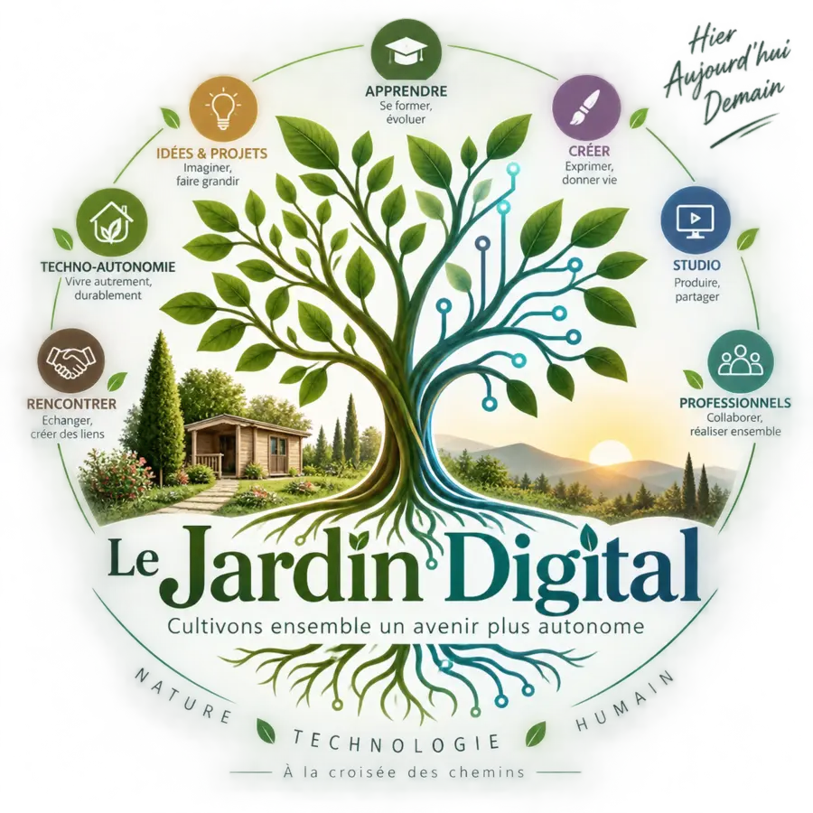
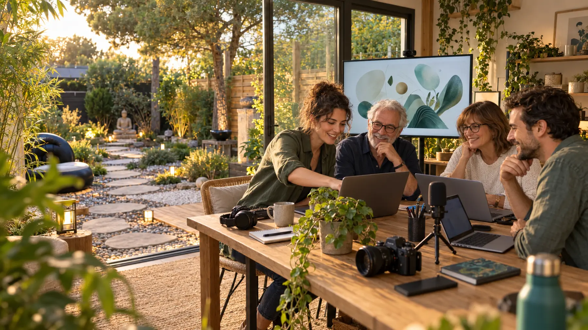
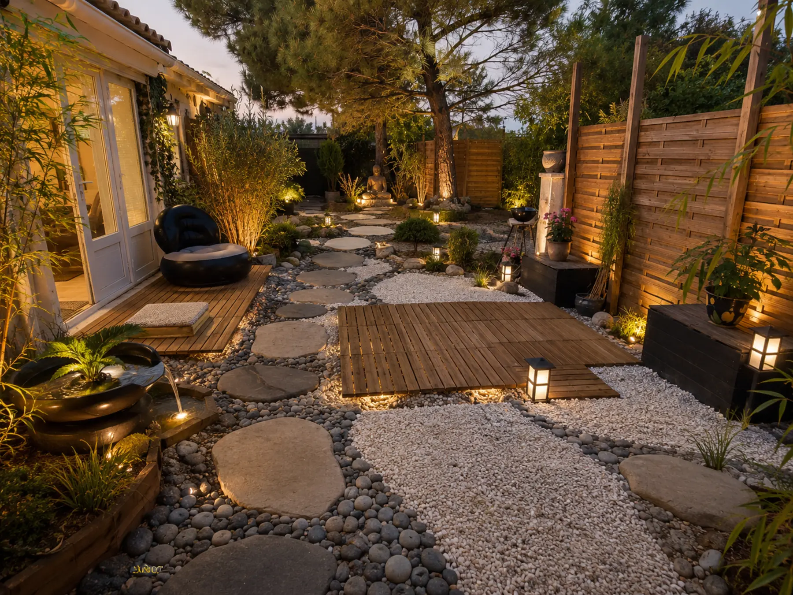
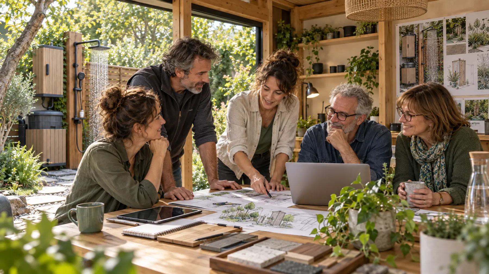
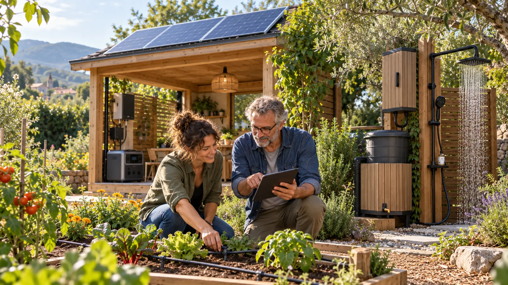

01
Apprendre & se former
Avancer à votre rythme
Informatique, bureautique, intelligence artificielle, prompting et usages du quotidien.
🌱 Découverte🌿 Initié🌳 Approfondissement
ExemplesAtelier IA — 25 €Accompagnement individuel — à partir de 35 €

Le Jardin DigitalCharente-Maritime · Bouhet / La Rochelle / Surgères
Numérique, multimédia, partage de compétences et techno-autonomie.
À la croisée des chemins d’hier, d’aujourd’hui et de demain.

La cartographie du Jardin
Choisissez un territoire. Chaque chemin mène à des usages concrets, adaptés à votre niveau et à votre projet.
Un lieu différent
Le Jardin Digital relie les savoir-faire simples d’hier, les outils d’aujourd’hui et les possibilités de demain. Ici, la technologie reste un moyen : mieux comprendre, mieux créer, mieux décider.

Sept territoires, une même envie
Apprendre & se former
Informatique, bureautique, intelligence artificielle, prompting et usages du quotidien.

Créer & produire
Son, musique, photo, vidéo, graphisme, montage, fond vert, sites web et petites applications.
À partir de 35 €Studio & matériel
Utiliser, tester et apprendre avec du matériel adapté, sans devoir tout posséder.
Sur rendez-vousTechno-autonomie
Solaire, stockage, eau, irrigation, domotique et habitat léger : comprendre avant de choisir.
Étude sur devisProfessionnels & entreprises
Formation, IA, bureautique, audit, interventions, petits séminaires et accompagnement digital.
Sur devisIdées & projets
Vous faites partie de l’équipe projet. Nous structurons le besoin et mobilisons les bonnes compétences.
Raconter mon idée →Rencontrer & partager
Ateliers collaboratifs, clubs, rencontres, échanges d’expérience et futurs partenaires.
Voir les rencontres →Cette saison au Jardin
Ateliers IA, informatique, multimédia et création s’installent progressivement en intérieur et à distance.
La vie du Jardin
Ateliers, formations, clubs, rencontres et expérimentations.
Comment participer ?
Sur rendez-vous, en individuel ou en petit groupe de 6 à 8 personnes.
Studio · Piccolina · Jardin saisonnierZoom, Teams ou la plateforme adaptée, avec partage d’écran.
Formation · IA · Bureautique · ProjetAteliers pour entreprises, mairies, associations et organismes de formation.
Jusqu’à environ 10 participantsJ’ai une idée
Même si votre idée n’est pas encore très claire, racontez-nous. Le premier entretien est gratuit et sans engagement.
Nos expérimentations
Des installations réelles pour comprendre les usages, les coûts et les limites.

Pourquoi Le Jardin Digital ?
Le projet rassemble l’expérience de l’informatique et de la formation, près de vingt années de vie en Polynésie, le multimédia, l’IA, la domotique et la techno-autonomie.
L’« hyper-confort », c’est employer la technologie lorsqu’elle améliore vraiment le confort, la sécurité, les compétences ou la maîtrise des consommations. Le Jardin Digital a vocation à devenir un pôle de compétences ouvert, au-delà de son fondateur.
Entrons en contact
Sur rendez-vous
Choisissez un sujet. La réservation sera prochainement reliée à une plateforme externe.
Et vous ?
Une compétence, une idée, un projet, une création, une nouvelle façon d’utiliser la technologie ? Parlons-en.